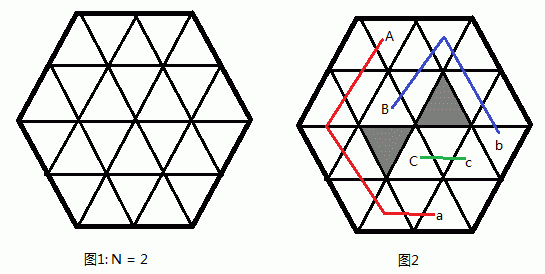

在2xyz年，人类已经移民到了火星上。由于工业的需要，人们开始在火星上采矿。火星的矿区是一个边长为 $N$ 的正六边形，为了方便规划，整个矿区被分为 $6 \times N \times N$ 个正三角形的区域（如图1）。

整个矿区中存在 A 矿，B 矿，C 矿三个矿场，和 a 厂，b 厂，c 厂三个炼矿厂。每个三角形的区域可以是一个矿场、炼矿厂、山地、或者平地。现在矿区管理局要求建立一个交通系统，使得矿场和对应炼矿厂之间存在一条公路，并且三条公路互不交叉（即一个三角形区域中不存在两条以上运输不同矿的公路）。两个三角形区域是相邻的当且仅当这两个三角形存在公共边，只有相邻的两个区域之间才能建一段路，建这段路的费用为 $1$。注意，山地上是不能建公路的。由于火星金融危机的影响，矿区管理局想知道建立这样一个交通系统最少要花多少费用。更多的，当局向知道有多少种花费最小的方案。
 Comet OJ
Comet OJ